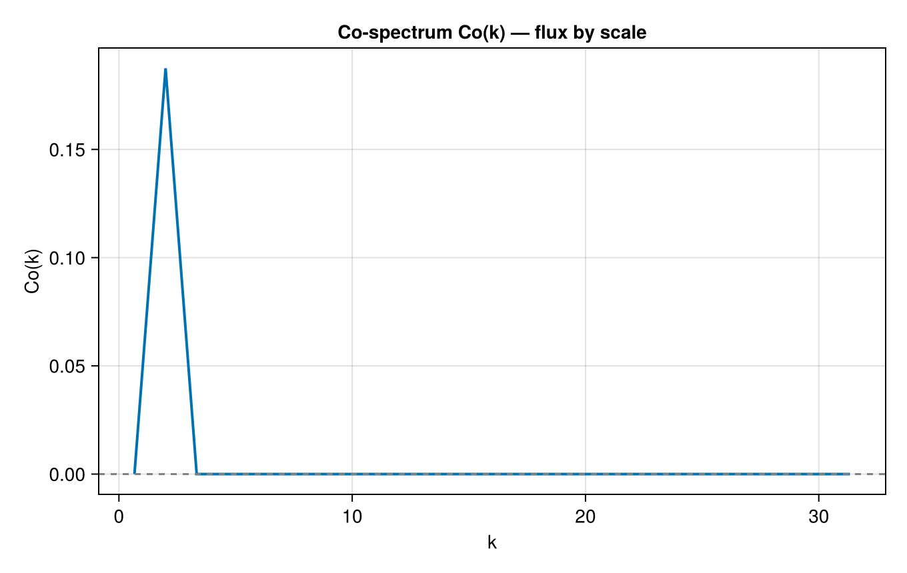
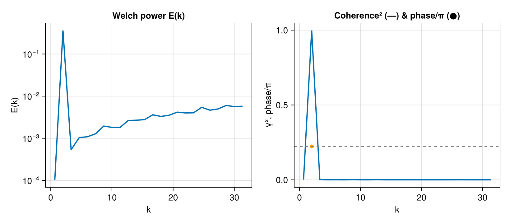

Cross-spectra & flux by scale
The co-spectrum Co_{fg}(k) = Re S_{fg}(k) distributes a covariance such as the momentum flux ⟨u'w'⟩ across scales — a staple of boundary-layer and turbulence analysis. Here two correlated fields share a common large-scale mode plus independent small-scale structure.
using FlowFieldSpectra: FlowFieldSpectra as FFS
using FFTW: FFTW # activates the FFTBackend extension
using CairoMakie: CairoMakie as Mke
L = 2π
N = 64
dx = L / N
xs = range(0.0, stop = L - dx, length = N)
xv = vec([x for x in xs, y in xs])
yv = vec([y for x in xs, y in xs])
u = @. cos(2xv) + 0.5 * sin(6yv) # shared mode at k≈2, own structure at k≈6
w = @. cos(2xv) - 0.4 * cos(9xv) # shared mode at k≈2, own structure at k≈9
grid = FFS.UniformCartesianGrid((xv, yv); domain_size = (L, L))
cu, ks = FFS.calculate_spectrum(FFS.FFTBackend(), grid, (u,), (N, N))
cw, _ = FFS.calculate_spectrum(FFS.FFTBackend(), grid, (w,), (N, N))
k, Co = FFS.cospectrum(ks, cu, cw; num_bins = 24)
fig = Mke.Figure(size = (680, 430))
ax = Mke.Axis(fig[1, 1]; title = "Co-spectrum Co(k) — flux by scale", xlabel = "k", ylabel = "Co(k)")
Mke.lines!(ax, k, Co; linewidth = 2)
Mke.hlines!(ax, [0.0]; color = :gray, linestyle = :dash)
fig
The co-spectrum peaks at the shared scale (k ≈ 2) and is near zero where the two fields have independent structure.
Welch averaging, coherence & phase
A single realization gives a noisy estimate and no meaningful coherence. Averaging over an ensemble of realizations (the trailing axis of the coefficient array) reduces variance and lets us estimate the magnitude-squared coherence γ²(k) ∈ [0, 1] and the phase between the two fields.
To recover a meaningful phase we use complex (rotary) signals — e.g. a horizontal velocity u + iv. A complex field has spectral content at +k only, so the cross-spectrum phase survives the radial binning; for a pair of real fields the ±k modes are complex conjugates and the binned phase cancels to zero. Each realization here shares a rotating mode at k ≈ 2 with a fixed phase lead ϕ, plus independent structure elsewhere.
import Random
Random.seed!(1)
nreal = 32
ϕ = 0.7 # fixed phase lead of g over f at the shared mode
Cf = zeros(ComplexF64, N, N, nreal)
Cg = zeros(ComplexF64, N, N, nreal)
for r in 1:nreal
a = 1.0 + 0.1 * randn() # shared-mode amplitude jitter
fr = @. a * exp(im * 2 * xv) + 0.5 * exp(im * (5 * xv) + im * 2π * rand())
gr = @. a * exp(im * (2 * xv - ϕ)) + 0.5 * exp(im * (7 * yv) + im * 2π * rand())
cfr, _ = FFS.calculate_spectrum(FFS.FFTBackend(), grid, (fr,), (N, N))
cgr, _ = FFS.calculate_spectrum(FFS.FFTBackend(), grid, (gr,), (N, N))
Cf[:, :, r] .= cfr[:, :, 1]
Cg[:, :, r] .= cgr[:, :, 1]
end
kw, Ef = FFS.welch_power_spectrum(ks, Cf; num_bins = 24)
kc, γ², phase = FFS.coherence_spectrum(ks, Cf, Cg; num_bins = 24)
# Phase is only meaningful where coherence is appreciable; mask the rest.
phase_plot = [γ²[i] > 0.3 ? phase[i] / π : NaN for i in eachindex(phase)]
fig = Mke.Figure(size = (820, 360))
ax1 = Mke.Axis(fig[1, 1]; title = "Welch power E(k)", xlabel = "k", ylabel = "E(k)", yscale = log10)
Mke.lines!(ax1, kw, Ef .+ 1e-20; linewidth = 2)
ax2 = Mke.Axis(fig[1, 2]; title = "Coherence² (—) & phase/π (●)", xlabel = "k", ylabel = "γ², phase/π")
Mke.lines!(ax2, kc, γ²; linewidth = 2)
Mke.scatter!(ax2, kc, phase_plot; color = :orange)
Mke.hlines!(ax2, [ϕ / π]; color = :gray, linestyle = :dash)
fig
Coherence is high only at the shared scale k ≈ 2, where the recovered phase matches the imposed lead ϕ (dashed line); elsewhere the independent structure drives coherence toward zero (and the phase, masked here, is meaningless).